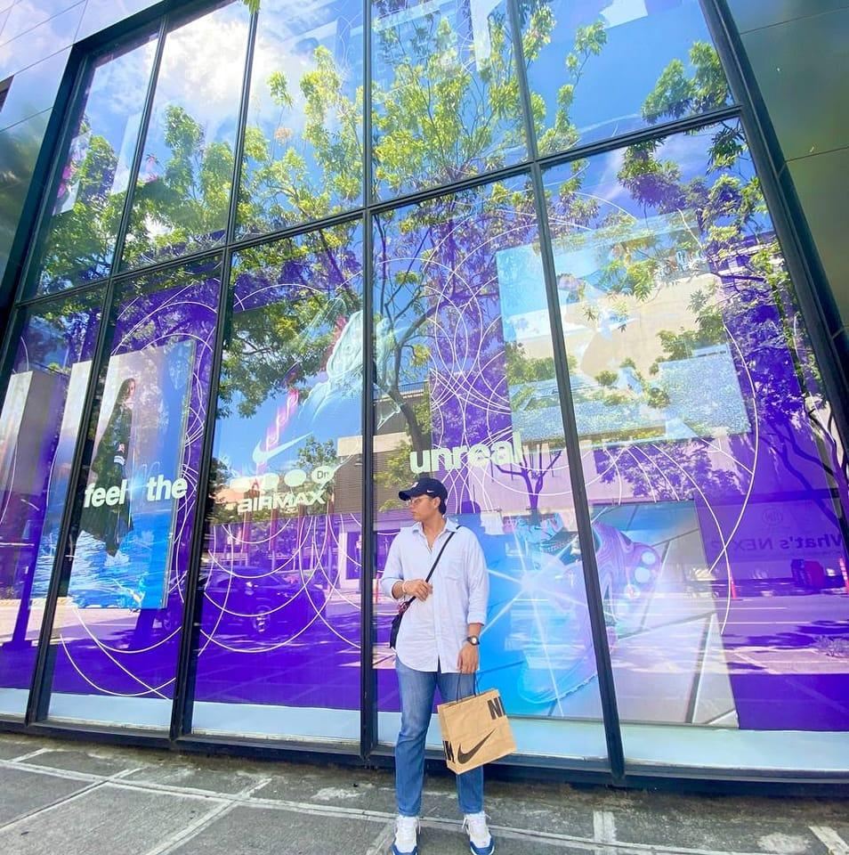

Ranjr_17

Ranjr_17Hello! I’m Randy Jr. Vuelban, a 23-year-old passionate and driven 3rd-year Computer Science student currently living in Salitran 2, Dasmariñas, Cavite. I’m currently studying at Cavite State University – Bacoor Campus, where I continuously nurture my curiosity for technology and its potential to improve lives.
From a young age, I’ve been fascinated by how digital tools can transform the way we live and work. That fascination grew into a deep passion for learning, building, and creating solutions to real-world problems through code and design.
I’m focused on developing my skills in web development and UI/UX design, I enjoy building responsive and user-friendly web applications that balance functionality with great design. Outside of my academic life, I work on personal projects to apply what I’ve learned and sharpen my problem-solving abilities. I value collaboration, whether through group projects, online communities, or contributing to open-source work, because I believe that the best innovations come from teamwork and shared creativity.
My goal is to build a meaningful and impactful career as a web developer and designer. I hope to one day live and work in a peaceful, quiet environment where I can continue creating digital experiences that are modern, ethical, and useful to others.